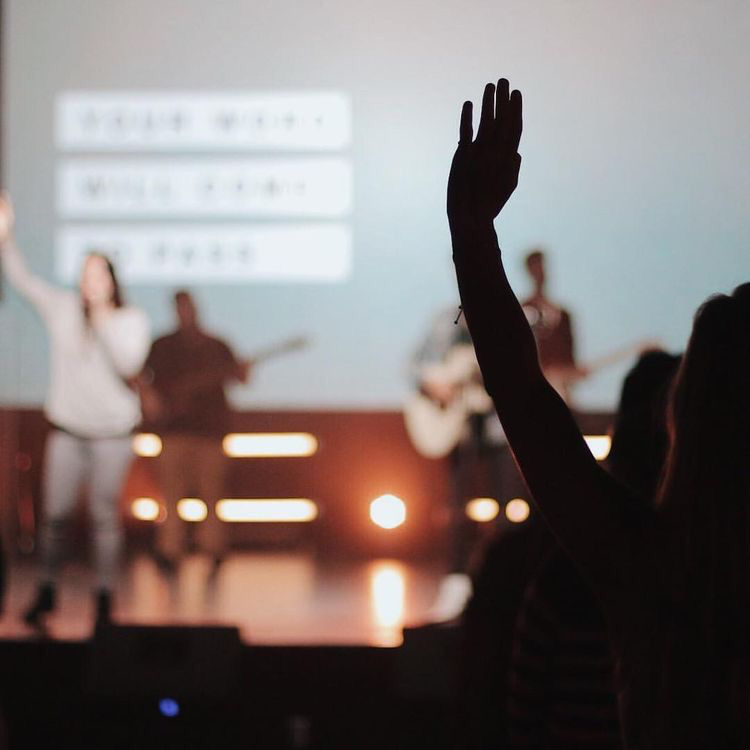
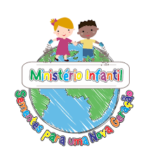
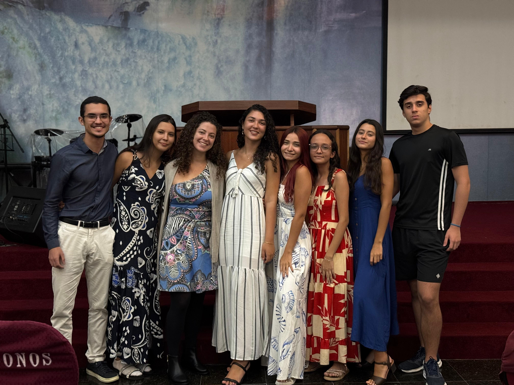

MINISTÉRIO
Ministério De Louvor
Responsável por conduzir a igreja em adoração. Ensaios semanais, seleções musicais e coordenação com pregadores.

MINISTÉRIO
Ministério Infantil
Cuida das crianças durante os cultos. Promove atividades, ensino bíblico e recreação.

MINISTÉRIO
Ministério De Intercessão
Grupo dedicado à oração e intercessão pela igreja e seus membros. Vigílias e reuniões de oração.
MINISTÉRIO
Ministério De Comunicações
Responsável pela mídia, transmissões ao vivo, redes sociais e anúncios da igreja.

MINISTÉRIO
Ministério Da Juventude
Acompanha os jovens da igreja com eventos, estudos e discipulados específicos para a faixa etária.
MINISTÉRIO
Ministério De Mulheres
Atividades, encontros e apoio para mulheres da igreja. Ensinos e discipulados direcionados.
MINISTÉRIO
Ministério De Homens
Reuniões e discipulados voltados para os homens da igreja, fortalecendo laços e fé.
MINISTÉRIO
Ver todos
Clique para visualizar todos os ministérios e conhecer mais sobre cada área de atuação.